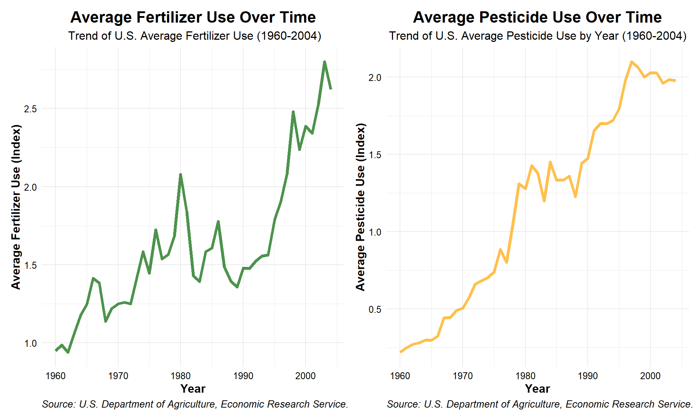
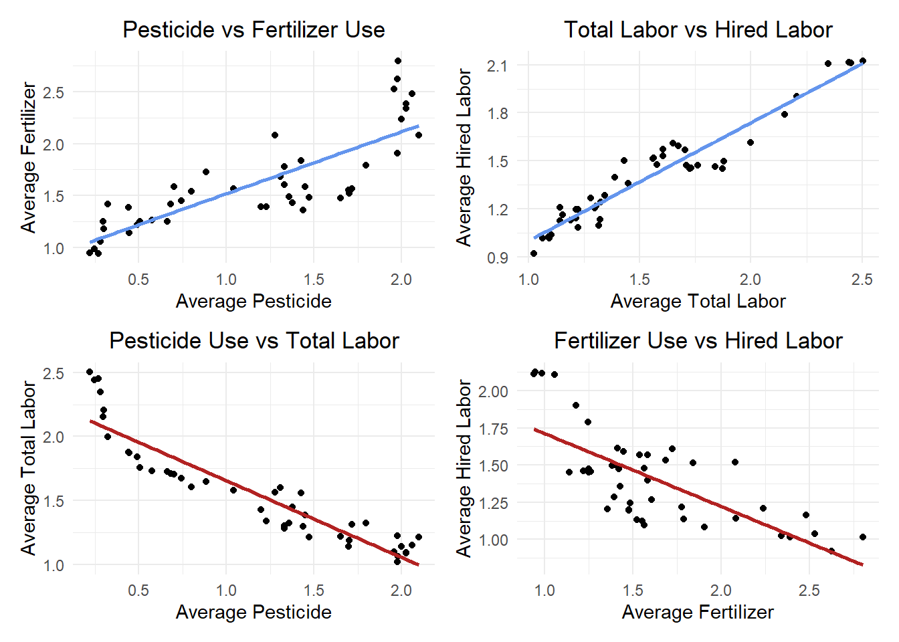

Spend a lot of time on the methods, explain research question, objective, where the data is from. Add citations where applicable. Does the data satisfy the needs of the analysis? EX: “ I need to do another test because my results aren’t robust enough”
Linear or logistic regression based on hypothesis and data.
Determine/explain what the indexes are representative of.
Tidy the data, make it longer and compare state by region and make it a categorical variable for a logistic regression: “How likely is it that a state is in a given region based on the values for fert/pest use”. Or I could compare a state to the national average.
Remove yield consideration from research question: it is already assumed that pest/fert affects yields.
Potential OVB: is total area represented? because that affects yield.
Outline
Intro - Introduction - Data summary & citation - Determine what indices mean and what category of labor to look at - Research question & objective
Setup - Load packages - Read in data
Data preparation - Remove extraneous rows/columns - Pivot longer - Add region column? - Convert indices to actual values?
Data exploration & processing - Visualize data -Trend analysis - Time-series plots - Seasonal, cyclical, or long term trend? - Correlation analysis - Correlation matrix - Scatter plots - Find the p-value - Hypo statements - Determine methods - Summary statistic(s) - Note missing data
Analysis - Labor is for USA so focus on a country average for all
Linear regression
Pesticide vs Fertilizer
Labor cost vs other variables
Time trend for each variable
Multi-linear regression
Use different quartiles of fertilizer and pesticide use
Interaction regression
Do fertilizer use change determining on pesticide use and vice versa?
Residual analysis
Model fit: R^2 and p-values relative to alpha = 0.05
Time???
Interpretation - Coefficients
Time Trends
Limitations
Discuss possible OVB or other limitations on ability to draw meaningful conclusions due ot influence on trends
Total area in use
Technology changes
Policy changes
Environmental changes
Include other information
Macroeconomic trends
Inflation
Cost of living Housekeeping
Data citations
Slide deck for presentation
Images for blog
Analysis summary (1500 words)
library(tidyverse)
── Attaching core tidyverse packages ──────────────────────── tidyverse 2.0.0 ──
✔ dplyr 1.1.4 ✔ readr 2.1.5
✔ forcats 1.0.0 ✔ stringr 1.5.1
✔ ggplot2 3.5.1 ✔ tibble 3.2.1
✔ lubridate 1.9.3 ✔ tidyr 1.3.1
✔ purrr 1.0.2
── Conflicts ────────────────────────────────────────── tidyverse_conflicts() ──
✖ dplyr::filter() masks stats::filter()
✖ dplyr::lag() masks stats::lag()
ℹ Use the conflicted package (<http://conflicted.r-lib.org/>) to force all conflicts to become errors
library(tidyr)library(here)
here() starts at C:/MEDS/EDS-296/stephenccodes.github.io
library(readxl)
Warning: package 'readxl' was built under R version 4.4.2
# Read in pesticide datapesticide <-read_excel(here("blog_posts/stats-project/data/pesticide_consumption_state.xls"), skip =5, range ="A6:AW53")pesticide_clean <- pesticide[rowSums(is.na(pesticide)) <ncol(pesticide), ]pesticide_tidy <- pesticide_clean %>%pivot_longer(cols =-Year, # Pivot all columns except Yearnames_to ="state", # Create a new column "State" for state namesvalues_to ="pesticide") %>%# The numeric values go into a new column "Value"group_by(Year) %>%mutate(avg_pesticide =mean(pesticide)) %>%ungroup() %>%distinct(Year, .keep_all =TRUE) %>%# Remove duplicate rows by yearselect(Year, avg_pesticide) # Keep only 'Year' and 'us_avg_pesticide'
# Read in fertilizer datafertilizer <-read_excel(here("blog_posts/stats-project/data/fertilizer_consumption_state.xls"), skip =5, range ="A6:AW53")fertilizer_clean <- fertilizer[rowSums(is.na(fertilizer)) <ncol(fertilizer), ]fertilizer_tidy <- fertilizer_clean %>%pivot_longer(cols =-Year, # Pivot all columns except Yearnames_to ="state", # Create a new column "State" for state namesvalues_to ="fertilizer") %>%# The numeric values go into a new column "Value"group_by(Year) %>%mutate(avg_fertilizer =mean(fertilizer)) %>%ungroup() %>%distinct(Year, .keep_all =TRUE) %>%# Remove duplicate rows by yearselect(Year, avg_fertilizer) # Keep only 'Year' and 'us_avg_pesticide'
# Read in labor datalabor <-read_csv(here("blog_posts/stats-project/data/labor_etc.csv"))
Rows: 2220 Columns: 3
── Column specification ────────────────────────────────────────────────────────
Delimiter: ","
chr (1): Attribute
dbl (2): Year, Value
ℹ Use `spec()` to retrieve the full column specification for this data.
ℹ Specify the column types or set `show_col_types = FALSE` to quiet this message.
# Filter rows in the 'labor' data frame where any column contains the word "labor"filtered_labor <- labor[apply(labor, 1, function(row) any(grepl("labor", row, ignore.case =TRUE))), ]
# Pivoting the data so that each attribute becomes its own columnlabor_clean <- filtered_labor %>%pivot_wider(names_from = Attribute, # The column to spread into multiple columnsvalues_from = Value, # The column to use as the values for each new columnnames_prefix ="Labor inputs: "# Adding a prefix to the new column names )
# Subset the labor data to keep only total labor index and hired labor indexlabor_tidy <- labor_clean[, c("Labor inputs: Labor inputs: Total", "Labor inputs: Labor inputs: Hired labor", "Year"), drop =FALSE] %>%select("Year", "Labor inputs: Labor inputs: Total", "Labor inputs: Labor inputs: Hired labor") %>%filter(Year >=1960) %>%# Filter for years 1960 and laterrename(avg_total_labor ="Labor inputs: Labor inputs: Total",avg_hired_labor ="Labor inputs: Labor inputs: Hired labor" )# labor_tidy <- labor_clean %>%# select(Year, 'Labor inputs: Labor inputs: Total') %>%# rename(total_labor = 'Labor inputs: Labor inputs: Total')
ggplot(fertilizer_tidy, aes(x = Year, y = avg_fertilizer)) +geom_line()

ggplot(pesticide_tidy, aes(x = Year, y = avg_pesticide)) +geom_point()
ggplot(labor_tidy, aes(x = Year, y = avg_total_labor)) +geom_line()
ggplot(pesticide_tidy, aes(x = Year, y = avg_pesticide)) +geom_point()

# Merge the pesticide_tidy, fertilizer_tidy, and labor_tidy dataframes by the 'Year' columncombined_tidy <-left_join(pesticide_tidy, fertilizer_tidy, by ="Year") %>%left_join(labor_tidy, by ="Year")# Add a column for the time difference between each year and the previous yearcombined_tidy <- combined_tidy %>%mutate(years_elapsed = Year -min(Year))# View the updated dataframehead(combined_tidy)
# Plot the trend of pesticide use over timeggplot(combined_tidy, aes(x = Year, y = avg_pesticide)) +geom_line(color ="orange", size =1.5, alpha =0.7) +# Add points with custom color, size, and transparencylabs(title ="Average Pesticide Use Over Time",subtitle ="Trend of U.S. Average Pesticide Use by Year (1960-2004)",x ="Year",y ="Average Pesticide Use (Index)",caption ="Source:U.S. Department of Agriculture, Economic Research Service. "# Optional caption for data source ) +theme_minimal() +# Clean backgroundtheme(text =element_text(size =12), # Set base font sizeaxis.title =element_text(face ="bold"), # Bold axis titlesaxis.text =element_text(color ="black"), # Color for axis labelsplot.title =element_text(hjust =0.5, size =16, face ="bold"), # Centered title with larger fontplot.subtitle =element_text(hjust =0.5, size =12), # Centered subtitleplot.caption =element_text(hjust =0, size =10, face ="italic") # Caption style )
Warning: Using `size` aesthetic for lines was deprecated in ggplot2 3.4.0.
ℹ Please use `linewidth` instead.
# Plot the trend of pesticide use over timeggplot(combined_tidy, aes(x = Year, y = avg_fertilizer)) +geom_line(color ="darkgreen", size =1.5, alpha =0.7) +# Add points with custom color, size, and transparencylabs(title ="Average Fertilizer Use Over Time",subtitle =" Trend of U.S. Average Fertilizer Use (1960-2004)",x ="Year",y ="Average Fertilizer Use (Index)",caption ="Source:U.S. Department of Agriculture, Economic Research Service. "# Optional caption for data source ) +theme_minimal() +# Clean backgroundtheme(text =element_text(size =12), # Set base font sizeaxis.title =element_text(face ="bold"), # Bold axis titlesaxis.text =element_text(color ="black"), # Color for axis labelsplot.title =element_text(hjust =0.5, size =16, face ="bold"), # Centered title with larger fontplot.subtitle =element_text(hjust =0.5, size =12), # Centered subtitleplot.caption =element_text(hjust =0, size =10, face ="italic") # Caption style )
# Plot the trend of labor needs over timeggplot(combined_tidy, aes(x = Year)) +geom_line(aes(y = avg_total_labor, color ="Total Labor"), size =1.5) +# Line for avg_total_laborgeom_line(aes(y = avg_hired_labor, color ="Hired Labor"), size =1.5) +# Line for avg_hired_laborscale_color_manual(values =c("Total Labor"="blue", "Hired Labor"="red")) +# Custom colorslabs(title ="Labor Inputs: Total vs. Hired Labor Over Time",subtitle ="Trend of U.S. Average Total Labor and Hired Labor Input Indices (1960-2004)",x ="Year",y ="Labor Inputs (Index)",color ="Labor Type"# Legend title ) +theme_minimal() +# Clean themetheme(text =element_text(size =12), # Set base font sizeaxis.title =element_text(face ="bold"), # Bold axis titlesaxis.text =element_text(color ="black"), # Axis labels colorlegend.title =element_text(face ="bold"), # Bold legend titlelegend.position ="top", # Position the legend at the topplot.title =element_text(hjust =0.5, size =16, face ="bold"), # Centered plot title with larger font sizeplot.subtitle =element_text(hjust =0.5, size =12) # Centered subtitle )
# Create time-series plots for each variableggplot(combined_tidy, aes(x = Year, y = avg_pesticide)) +geom_line() +labs(title ="Trend of Average Pesticide Use (1960-2004)", x ="Year", y ="Average Pesticide") +theme_minimal()
ggplot(combined_tidy, aes(x = Year, y = avg_fertilizer)) +geom_line() +labs(title ="Trend of Average Fertilizer Use (1960-2004)", x ="Year", y ="Average Fertilizer") +theme_minimal()
ggplot(combined_tidy, aes(x = Year, y = avg_total_labor)) +geom_line() +labs(title ="Trend of Total Labor Inputs (1960-2004)", x ="Year", y ="Average Total Labor") +theme_minimal()
ggplot(combined_tidy, aes(x = Year, y = avg_hired_labor)) +geom_line() +labs(title ="Trend of Hired Labor Inputs (1960-2004)", x ="Year", y ="Average Hired Labor") +theme_minimal()
library(knitr)library(dplyr)# Calculate the correlation matrixcor_matrix <-cor(combined_tidy[, c("avg_pesticide", "avg_fertilizer", "avg_total_labor", "avg_hired_labor")])# Convert the correlation matrix into a data frame for better table formattingcor_df <-as.data.frame(cor_matrix)# Use kable() to display the correlation matrix as a tablekable(cor_df, digits =2, caption ="Correlation Matrix of Agricultural Inputs (r)", format ="html")
Correlation Matrix of Agricultural Inputs (r)
avg_pesticide
avg_fertilizer
avg_total_labor
avg_hired_labor
avg_pesticide
1.00
0.82
-0.93
-0.87
avg_fertilizer
0.82
1.00
-0.76
-0.72
avg_total_labor
-0.93
-0.76
1.00
0.96
avg_hired_labor
-0.87
-0.72
0.96
1.00
# Scatter plots to examine relationships between pairs of variablesggplot(combined_tidy, aes(x = avg_pesticide, y = avg_fertilizer)) +geom_point() +labs(title ="Pesticide vs Fertilizer Use", x ="Average Pesticide", y ="Average Fertilizer") +theme_minimal()
ggplot(combined_tidy, aes(x = avg_total_labor, y = avg_hired_labor)) +geom_point() +labs(title ="Total Labor vs Hired Labor", x ="Average Total Labor", y ="Average Hired Labor") +theme_minimal()
ggplot(combined_tidy, aes(x = avg_pesticide, y = avg_total_labor)) +geom_point() +labs(title ="Pesticide Use vs Total Labor", x ="Average Pesticide", y ="Average Total Labor") +theme_minimal()
ggplot(combined_tidy, aes(x = avg_fertilizer, y = avg_hired_labor)) +geom_point() +labs(title ="Fertilizer Use vs Hired Labor", x ="Average Fertilizer", y ="Average Hired Labor") +theme_minimal()
# Multi-linear regression: Predicting avg_total_labor using pesticide_quartile and fertilizer_quartiletotal_labor_model <-lm(avg_total_labor ~ avg_pesticide + avg_fertilizer + years_elapsed, data = combined_tidy)# View the summary of the model to interpret the coefficientssummary(total_labor_model)
Call:
lm(formula = avg_total_labor ~ avg_pesticide + avg_fertilizer +
years_elapsed, data = combined_tidy)
Residuals:
Min 1Q Median 3Q Max
-0.17500 -0.10004 -0.05011 0.08482 0.31764
Coefficients:
Estimate Std. Error t value Pr(>|t|)
(Intercept) 2.095187 0.087895 23.837 <2e-16 ***
avg_pesticide 0.065333 0.161786 0.404 0.688
avg_fertilizer 0.095925 0.077624 1.236 0.224
years_elapsed -0.035219 0.008039 -4.381 8e-05 ***
---
Signif. codes: 0 '***' 0.001 '**' 0.01 '*' 0.05 '.' 0.1 ' ' 1
Residual standard error: 0.1313 on 41 degrees of freedom
Multiple R-squared: 0.9029, Adjusted R-squared: 0.8958
F-statistic: 127.1 on 3 and 41 DF, p-value: < 2.2e-16
# A separate model predicting avg_total_labor using only avg_hired_laborhired_labor_model <-lm(avg_hired_labor ~ avg_pesticide + avg_fertilizer + years_elapsed, data = combined_tidy)# View the summary of this modelsummary(hired_labor_model)
Call:
lm(formula = avg_hired_labor ~ avg_pesticide + avg_fertilizer +
years_elapsed, data = combined_tidy)
Residuals:
Min 1Q Median 3Q Max
-0.243498 -0.054767 -0.009707 0.060201 0.288865
Coefficients:
Estimate Std. Error t value Pr(>|t|)
(Intercept) 1.766551 0.084492 20.908 < 2e-16 ***
avg_pesticide 0.298229 0.155522 1.918 0.0621 .
avg_fertilizer 0.078994 0.074619 1.059 0.2960
years_elapsed -0.038025 0.007728 -4.920 1.45e-05 ***
---
Signif. codes: 0 '***' 0.001 '**' 0.01 '*' 0.05 '.' 0.1 ' ' 1
Residual standard error: 0.1262 on 41 degrees of freedom
Multiple R-squared: 0.8485, Adjusted R-squared: 0.8374
F-statistic: 76.52 on 3 and 41 DF, p-value: < 2.2e-16
# Extract the summaries for both modelstotal_labor_summary <-summary(total_labor_model)$coefficientshired_labor_summary <-summary(hired_labor_model)$coefficients# Convert to data frames for easier manipulationtotal_labor_df <-as.data.frame(total_labor_summary)colnames(total_labor_df) <-c("Estimate", "Std. Error", "t value", "p-value")total_labor_df$Variable <-rownames(total_labor_df)total_labor_df$Model <-"Total Labor"hired_labor_df <-as.data.frame(hired_labor_summary)colnames(hired_labor_df) <-c("Estimate", "Std. Error", "t value", "p-value")hired_labor_df$Variable <-rownames(hired_labor_df)hired_labor_df$Model <-"Hired Labor"# Remove row names (index) by resetting the row names to NULLrownames(total_labor_df) <-NULLrownames(hired_labor_df) <-NULL# Print the tables separatelytotal_labor_table <-kable(total_labor_df[, c("Variable", "Estimate", "Std. Error", "t value", "p-value")],digits =3, caption ="Regression Coefficients for Total Labor Model",format ="html")hired_labor_table <-kable(hired_labor_df[, c("Variable", "Estimate", "Std. Error", "t value", "p-value")],digits =3,caption ="Regression Coefficients for Hired Labor Model",format ="html")# Print the tablestotal_labor_table
The following object is masked from 'package:dplyr':
combine
# Create the plot for Total Labor Modeltotal_labor_plot <-ggplot(combined_tidy, aes(x = Year, y = avg_total_labor)) +geom_point(color ="blue", size =2) +# Scatter plot for avg_total_laborgeom_smooth(method ="lm", formula = y ~ x, color ="red", linetype ="solid") +# Regression line for total_labor_modellabs(title ="Total Labor vs Year", x ="Year", y ="Average Total Labor") +theme_minimal()# Create the plot for Hired Labor Modelhired_labor_plot <-ggplot(combined_tidy, aes(x = Year, y = avg_hired_labor)) +geom_point(color ="green", size =2) +# Scatter plot for avg_hired_laborgeom_smooth(method ="lm", formula = y ~ x, color ="purple", linetype ="solid") +# Regression line for hired_labor_modellabs(title ="Hired Labor vs Year", x ="Year", y ="Average Hired Labor") +theme_minimal()# Display both plots side by sidegrid.arrange(total_labor_plot, hired_labor_plot, ncol =2)
# 1. Scatter plot for Total Labor (avg_total_labor) vs. Pesticide use (avg_pesticide)ggplot(combined_tidy, aes(x = avg_pesticide, y = avg_total_labor)) +geom_point() +# Scatter plotgeom_smooth(method ="lm", color ="blue", se =FALSE) +# Regression line for total laborlabs(title ="Total Labor vs. Pesticide Use", x ="Average Pesticide Use", y ="Average Total Labor",caption ="Regression line (Total Labor)") +theme_minimal() +theme(plot.title =element_text(hjust =0.5, size =16, face ="bold"),plot.caption =element_text(hjust =0.5, size =12),axis.title =element_text(size =14),axis.text =element_text(size =12) )
`geom_smooth()` using formula = 'y ~ x'
# 2. Scatter plot for Total Labor (avg_total_labor) vs. Fertilizer use (avg_fertilizer)ggplot(combined_tidy, aes(x = avg_fertilizer, y = avg_total_labor)) +geom_point() +# Scatter plotgeom_smooth(method ="lm", color ="green", se =FALSE) +# Regression line for total laborlabs(title ="Total Labor vs. Fertilizer Use", x ="Average Fertilizer Use", y ="Average Total Labor",caption ="Regression line (Total Labor)") +theme_minimal() +theme(plot.title =element_text(hjust =0.5, size =16, face ="bold"),plot.caption =element_text(hjust =0.5, size =12),axis.title =element_text(size =14),axis.text =element_text(size =12) )
`geom_smooth()` using formula = 'y ~ x'
# 3. Scatter plot for Hired Labor (avg_hired_labor) vs. Pesticide use (avg_pesticide)ggplot(combined_tidy, aes(x = avg_pesticide, y = avg_hired_labor)) +geom_point() +# Scatter plotgeom_smooth(method ="lm", color ="red", se =FALSE) +# Regression line for hired laborlabs(title ="Hired Labor vs. Pesticide Use", x ="Average Pesticide Use", y ="Average Hired Labor",caption ="Regression line (Hired Labor)") +theme_minimal() +theme(plot.title =element_text(hjust =0.5, size =16, face ="bold"),plot.caption =element_text(hjust =0.5, size =12),axis.title =element_text(size =14),axis.text =element_text(size =12) )
`geom_smooth()` using formula = 'y ~ x'
# 4. Scatter plot for Hired Labor (avg_hired_labor) vs. Fertilizer use (avg_fertilizer)ggplot(combined_tidy, aes(x = avg_fertilizer, y = avg_hired_labor)) +geom_point() +# Scatter plotgeom_smooth(method ="lm", color ="green", se =FALSE) +# Regression line for hired laborlabs(title ="Hired Labor vs. Fertilizer Use", x ="Average Fertilizer Use", y ="Average Hired Labor",caption ="Regression line (Hired Labor)") +theme_minimal() +theme(plot.title =element_text(hjust =0.5, size =16, face ="bold"),plot.caption =element_text(hjust =0.5, size =12),axis.title =element_text(size =14),axis.text =element_text(size =12) )
`geom_smooth()` using formula = 'y ~ x'
# 5. Scatter plot for Total Labor vs. Years Elapsedggplot(combined_tidy, aes(x = years_elapsed, y = avg_total_labor)) +geom_point() +# Scatter plotgeom_smooth(method ="lm", color ="blue", se =FALSE) +# Regression line for total laborlabs(title ="Total Labor vs. Years Elapsed", x ="Years Elapsed", y ="Average Total Labor",caption ="Regression line (Total Labor)") +theme_minimal() +theme(plot.title =element_text(hjust =0.5, size =16, face ="bold"),plot.caption =element_text(hjust =0.5, size =12),axis.title =element_text(size =14),axis.text =element_text(size =12) )
`geom_smooth()` using formula = 'y ~ x'
# 6. Scatter plot for Hired Labor vs. Years Elapsedggplot(combined_tidy, aes(x = years_elapsed, y = avg_hired_labor)) +geom_point() +# Scatter plotgeom_smooth(method ="lm", color ="red", se =FALSE) +# Regression line for hired laborlabs(title ="Hired Labor vs. Years Elapsed", x ="Years Elapsed", y ="Average Hired Labor",caption ="Regression line (Hired Labor)") +theme_minimal() +theme(plot.title =element_text(hjust =0.5, size =16, face ="bold"),plot.caption =element_text(hjust =0.5, size =12),axis.title =element_text(size =14),axis.text =element_text(size =12) )
`geom_smooth()` using formula = 'y ~ x'
Citation
BibTeX citation:
@online{carroll2024,
author = {Carroll, Stephen},
title = {Examing the {Impact} on {Fertilizer} \& {Pesticide} {Use} on
{Agricultural} {Labor} {Needs}},
date = {2024-10-18},
url = {https://stephenccodes.github.io/blog/fertilizer-pesticides-and-labor/},
langid = {en}
}